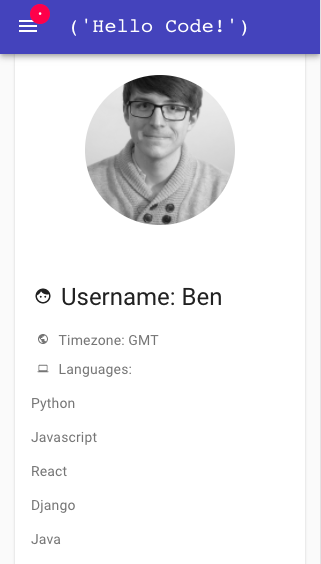

Fortuny
Carrega
Software
Engineer
I am a Software Engineer with skills both in the front end and in the back end. I graduated from university with a degree in Economics and Management, but my passion for problem solving and logic quickly directed me towards a career in software development. I decided to take the Software Engineering Immersive course at General Assembly, where I learned how to build full-stack applications with JavaScript, Express, React, Python and Django. I am very excited to start working as a developer.
In my free time, I enjoy watching movies and TV shows and reading books of many different genres and from all over the world. Languages and cultures being a passion of mine, I also use movies, TV and books to connect with other countries and learn more about them. I also practice my languages this way. I also like dancing and choreographing in different genres.
Programming skills:
Languages:
Italian (native) | French (native) | English (fluent) | Spanish (fluent) | Korean (intermediate)
Soft Skills:
Problem solving | Logic | Adaptability | Teamwork | Planning and Organisation
At GA, we had four main projects that we completed throughout the course:
Project 4 - HelloCode (1 week): This last project was in a team of 4. We decided to build a chat
functionality in our app, which proved to be very challenging because we used web-sockets and had to learn a
whole new skill. We were very ambitious in general with this project because we took on 4 new technologies,
Django, Channels, Hooks, and Material-UI, so we spent a lot of time debugging. I spent more time on the
front end, and with Material-UI, but also built the initial models and serializers in the back end for our
languages and users. We all worked together a lot on this project, we all kind of participated in many
things and helped each other. HelloCode is an app where coders can find people who know the languages
they’re learning at can help each other with coding issues!



Open the website
View the project on GitHub
Project 3 - Trivia Game (10 days): This project was in teams of 4, and was our first full-stack app. We
used
React in the front end and MongoDB and Express in the back end. We made a trivia game using an external API
called OpenTriviaDB with questions and answers, and stored user information, scores and comments in our own
database. We divided tasks between team members. I mainly worked on the front end logic for the questions
and answers. It was good because we all got to practice our skills both in the front end and in the back
end. I found out through this project that building the game logic in the front end is something I really
enjoy. We made this app mobile view first, since most people would probably open this game from their
phones.


Open the website
View the project on GitHub
Project 2 - SpaceX Launches (2 days): This project was in pairs. My partner and I, being both space
enthusiasts, decided to use SpaceX’s API to make an app that displays past and future launches. We used
JavaScript, Webpack, React, Insomnia and Bulma in our app. We matched missing data from the API with images
and descriptions of our own. We learned a lot about API structuring, which was helpful for future projects
where we had our own back end.

Open the website
View the project on GitHub
Project 1 - Pac-Man (1 week): This first project was a solo project where we had to build a game of
Pac-Man, similar to the original, but with a few personal changes. I used HTML5, CSS, and JavaScript to
build this game. I did all of the logic and all of the styling, as well as a background story animation.

Open the website
View the project on GitHub